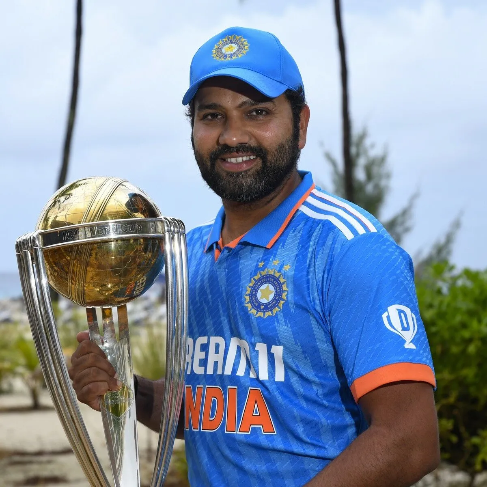
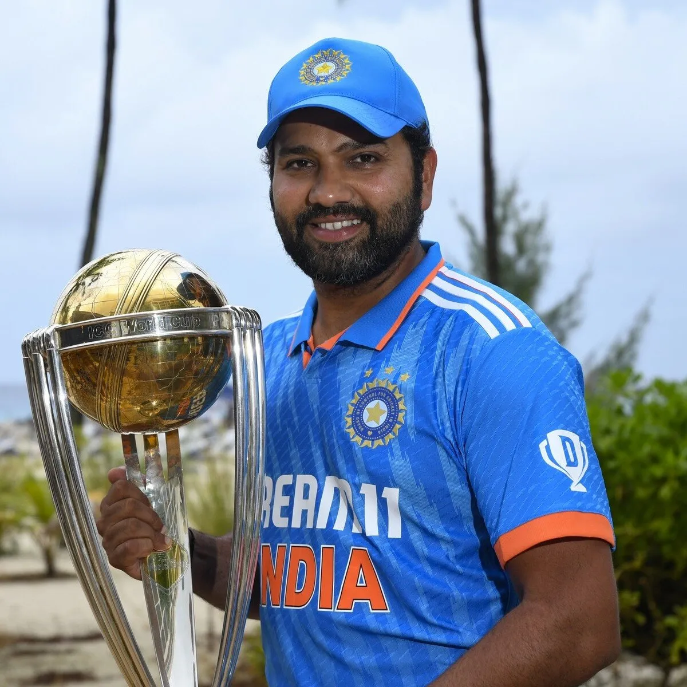

Cricket
Players
Batsman

Virat Kohli (born 5 November 1988)[b] is an Indian international
cricketer who plays Test and ODI cricket for the national team and is a
former captain in all formats.[5] He is a right-handed batsman and an
occasional right arm medium pace bowler. He is called the king, the chase
master and the run machine for his playing style, records and ability to
lead the team to victory
 

Rohit Gurunath Sharma[3] (born 30 April 1987) is an Indian international
cricketer and the captain of Indian cricket team in Test and ODI formats.
He is widely regarded as one of the greatest ODI opening batters of all
time.[4] He is a right-handed batsman who plays for Mumbai Indians in
Indian Premier League and for Mumbai in domestic cricket. Rohit previously
captained India in all three formats.
Kannaur Lokesh Rahul (Kannada: [kaɳːuːɾ loːkeːʃ ɾaːhul]; born 18 April 1992) is an
Indian cricketer who plays for the Indian national team and will play for
Delhi Capitals in the Indian Premier League 2025. A right-handed wicket-keeper
batter, he plays for Karnataka in domestic cricket.

Shubman Gill (born 8 September 1999) is an Indian international
cricketer who represents the national team across all three formats
of the game and is the current vice-captain of the ODI team. Currently,
he is the World No. 1 in ODI rankings. He captains Gujarat Titans in the
Indian Premier League and plays for Punjab in domestic cricket. A right-handed
top-order batter, he made his international debut for in January 2019 against
New Zealand
Shreyas Santosh Iyer (born 6 December 1994) is an Indian international
cricketer who plays for the India as a right-handed middle-order batter.
He also plays for Mumbai in domestic cricket and captains the Punjab Kings
in the Indian Premier League.He was a part of the Indian team that won the
2025 ICC Champions Trophy.
All Rounder


Hardik Himanshu Pandya (born 11 October 1993) is an Indian international
cricketer who plays for the Indian cricket team. He is an all-rounder who is
a right-handed middle order batsman and fast-medium bowler. He is considered
one of the best all-rounders in the world in white-ball cricket. Pandya has
represented India in all three formats. He captains Mumbai Indians in the
Indian Premier League and occasionally plays for Baroda in domestic cricket.
He has captained the Indian team in white-ball cricket and was the vice
captain of the team that won the 2024 T20 World Cup.

Ravindrasinh Anirudhsinh Jadeja (born 6 December 1988) is an Indian
cricketer who represents the national team in ODI and Test formats. He is
an all-rounder, who bats left-handed and bowls left-arm orthodox spin. He
is regarded as one of the best all-rounders of his generation, becoming
the fifth Indian and fifth-fastest player to score 2,000 runs and take 200
wickets in Test cricket in 2021. Jadeja was the leading wicket-taker in the
2013 Champions Trophy and received the man of the match award as a member of
the final-winning team.[3] He was a part of the team which won the 2024 T20
World Cup, after which he announced his retirement from T20Is
Bowler

Jasprit Jasbirsingh Bumrah (Punjabi; born 6 December 1993) is an Indian
cricketer who plays for the national team in all formats of the game.
He is the vice-captain of India in the Test format and has captained
India in Tests and T20Is. A right-arm fast bowler, Bumrah plays for
Gujarat in domestic cricket and for Mumbai Indians in the Indian Premier
League. Bumrah was a crucial member of the Indian team that won the 2024
T20 World Cup, where he was named the Player of the Tournament for taking
15 wickets with an average economy of 4.17.

Mohammed Shami Ahmed[a] (Hindi: [ʃʌmiː]; born 3 September 1990) is an Indian
international cricketer who plays as a right-arm fast-bowler, for the India
national cricket team and for the Bengal in domestic cricket[3] and for the
Sunrisers Hyderabad in the Indian Premier League. He also plays for Mohun
Bagan in domestic competitions of West Bengal. One of the most consistent
wicket takers in contemporary world cricket, Shami bowls the ball off the
seam and uses swing, including reverse swing, to move the ball both directions
. He has been reputed to have an edge in the death overs of a limited-overs
innings and, in all formats, has been described as being at times "unplayable"
. Shami finished as the tournament's leading wicket taker in the ICC World Cup
2023, besides being the fastest bowler to take 50 wickets in the 48 years
history of Cricket World Cup spanning 13 editions.

DSP Mohammed Siraj (Hindi: [sɪɾaːdʒ]; born 13 March 1994)
is an Indian international cricketer who plays as a right-arm
fast bowler for the Indian national team. He also plays for
Gujarat Titans in the Indian Premier League and Hyderabad in
domestic cricket. He was a part of the Indian squad which won
the 2023 Asia Cup, where he was the Player of the Match in the
final against Sri Lanka. He was a member of the Indian team that
won the 2024 T20 World Cup.